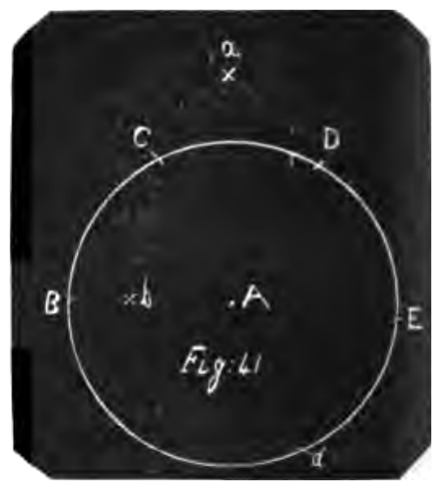

§§ 97–98: Dividere una distanza in estrema e media ragione (Fig. 41)¶
97. Prob. Dividere la \(AB\) (fig. 41) in estrema e media ragione.
Sol. Col centro \(A\), raggio \(AB\) si descriva il cerchio \(BDd\). Si faccia nella sua circonferenza ad \(AB = BC = CD = DE = Ed\). Si faccia a \(BD = Ba = Ea\). Si faccia ad \(Aa = Db = db\). Sarà la \(AB\) divisa in \(b\) in estrema, e media ragione, e si avrà \(BA : Ab :: Ab : bB\).
Dim. Vedi il § 46.


98. Anche quest’ultimo problema (§ 97) è uno di quelli, i quali si sciolgono molto più semplicemente col solo compasso, che col compasso e colla riga insieme, come si può vedere confrontando questa soluzione colle soluzioni geometriche conosciute. La dimostrazione tuttavia riesce più complicata.